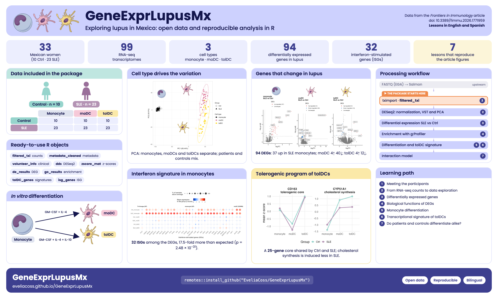

Get started with GeneExprLupusMx
What the package contains and where to start
2026-10-28
Source:vignettes/intro_en.Rmd
intro_en.RmdWhat is GeneExprLupusMx?
GeneExprLupusMx is an R package with
transcriptomic (RNA-seq) data from Mexican women with systemic
lupus erythematosus (SLE) and from healthy controls. It is
designed for research and teaching: besides the data, it includes
step-by-step lessons to learn how to analyze them.
-
33 participants: 10 healthy controls
(
Ctrl) and 23 patients with lupus (SLE). - 3 cell types per participant: monocytes, monocyte-derived dendritic cells (moDC), and tolerogenic dendritic cells (tolDC).
- 99 samples in total (33 × 3).
The data come from the article:
Hernández-Ledesma AL, Coss-Navarrete EL, et al (2026) Gene expression profiling of dendritic cell tolerance dysfunction in women with systemic lupus erythematosus. Front. Immunol. 17:1771959. doi: 10.3389/fimmu.2026.1771959.

Overview of the study and of the package contents.
Installation
Install the package from GitHub. Some
lessons also use DESeq2, available on Bioconductor:
install.packages(c("remotes", "BiocManager", "tidyverse"))
remotes::install_github("EveliaCoss/GeneExprLupusMx")
BiocManager::install("DESeq2")Once installed, load it:
What data does it contain?
The package includes three main datasets. They are available as soon as you load the package; there is nothing else to download.
| Object | What it contains | One row per | Size |
|---|---|---|---|
filtered_txi |
RNA-seq counts quantified with Salmon and imported with
tximport
|
gene | 21,718 genes × 99 samples |
metadata_cleaned |
Group, cell type, and clinical data for each sample | sample | 99 samples |
volunteer_info |
Age, diagnosis, treatments, and recruitment date | volunteer | 33 volunteers |
It also includes reference gene lists used by some lessons:
| Object | What it contains | Used in |
|---|---|---|
biotype_summary |
Biotype of each gene (protein-coding, lncRNA…) | Lesson 4 |
sle_genes |
Genes associated with lupus in the literature | Lesson 4 |
isg_genes |
Interferon-stimulated genes (Yu et al., 2025) | Lesson 4 |
moDC_genes |
Genes described in the differentiation from monocyte to moDC | Lesson 5 |
dc_genes |
Genes associated with dendritic cell differentiation | Lesson 5 |
tolDC_genes |
Transcriptional signature of tolerogenic dendritic cells (Robertson et al., 2021) | Lesson 6 |
It also includes checkpoints: objects that are built in one lesson and saved in the package so that the next lesson can start from there, without repeating the steps.
| Object | What it contains | Built in |
|---|---|---|
dds |
Filtered and normalized DESeqDataSet (13,596 genes × 99
samples); requires DESeq2
|
Lesson 2 |
zscore_mat |
Matrix of z-scores of VST expression, for heatmaps (13,596 genes × 99 samples) | Lesson 2 |
de_results |
SLE vs Ctrl differential expression results for each cell type
(DESeq2) |
Lesson 3 |
go_results |
Enriched functional terms of the DEGs (g:Profiler, version e113) | Lesson 4 |
de_celltype_results |
Differential expression of moDC and tolDC against monocytes, in
controls and patients (DESeq2) |
Lesson 5 |
go_celltype_results |
Enriched functional terms of those DEGs (g:Profiler) | Lesson 5 |
de_interaction_results |
Group:Cell_type interaction: genes whose change from
monocyte to dendritic cell is different in patients
(DESeq2) |
Lesson 7 |
go_interaction_results |
Enriched functional terms of those genes (g:Profiler) | Lesson 7 |
A quick look at each one:
dim(filtered_txi$counts) # genes x samples
#> [1] 21718 99
head(metadata_cleaned[, c("sample_ID", "Group", "Cell_type")], 3)
#> sample_ID Group Cell_type
#> QR011_0 QR011_0 Ctrl monocyte
#> QR011_1 QR011_1 Ctrl moDC
#> QR011_3 QR011_3 Ctrl tolDC
head(volunteer_info[, c("Volunteer_ID", "Group", "Age_years", "Time_of_recruitment")], 3)
#> Volunteer_ID Group Age_years Time_of_recruitment
#> 1 QR011 Ctrl 25 2022-06-01
#> 2 QR013 Ctrl 23 2022-06-01
#> 3 QR014 SLE 32 2022-06-01How are they related?
The three tables are connected through their identifiers. Each sample
has a name such as QR011_1: the first part
(QR011) identifies the volunteer and the final number
identifies the cell type (_0 = monocyte, _1 =
moDC, _3 = tolDC).
flowchart LR T["filtered_txi
counts per gene"] -- "columns = sample_ID" --- M["metadata_cleaned
one row per sample"] M -- "Volunteer_ID
(prefix of sample_ID)" --- V["volunteer_info
one row per volunteer"]
# The count columns are in the same order as the metadata rows
all(colnames(filtered_txi$counts) == metadata_cleaned$sample_ID)
#> [1] TRUE
# From sample to volunteer
sub("_.*", "", "QR011_1")
#> [1] "QR011"To learn about each column in detail, see the help pages:
?filtered_txi, ?metadata_cleaned, and
?volunteer_info.
Learning path
The lessons are designed to be followed in order, but each one can be read on its own.
flowchart LR P["Get started
(this page)"] --> L1["1. Meeting the participants:
descriptive statistics"] L1 --> L2["2. From RNA-seq counts
to data exploration"] L2 --> L3["3. Differentially
expressed genes"] L3 --> L4["4. Biological functions
of DEGs"] L4 --> L5["5. Differentiation of monocytes
into dendritic cells"] L5 --> L6["6. The signature of tolerogenic
dendritic cells"] L6 --> L7["7. Do patient and control cells
differentiate in the same way?"]
| Lesson | You will learn to… | Data | Time |
|---|---|---|---|
| 1. Meeting the participants | Describe the cohort with descriptive statistics, tables, normality tests, and comparisons between groups | volunteer_info |
45 to 60 min |
| 2. From RNA-seq counts to data exploration | Import the counts, normalize them with DESeq2, explore
genes, and make heatmaps and PCA |
filtered_txi, metadata_cleaned,
volunteer_info
|
1 to 1.5 h |
| 3. Differentially expressed genes between patients and controls | Validate cell types with biomarkers, run differential expression
with DESeq2, and interpret volcano plots |
filtered_txi, metadata_cleaned,
zscore_mat
|
1.5 h |
| 4. Biological functions of differentially expressed genes | Run a functional enrichment analysis with g:Profiler, identify SLE and ISG genes, test their enrichment (hypergeometric and Fisher), and correlate ISGs with disease activity |
de_results, go_results,
sle_genes, isg_genes,
biotype_summary, zscore_mat,
metadata_cleaned, volunteer_info
|
1.5 h |
| 5. Differentiation of monocytes into dendritic cells | Compare dendritic cells against monocytes, validate differentiation with known genes, and explore pathways and lipid metabolism |
de_celltype_results, go_celltype_results,
moDC_genes, dc_genes
|
1.5 h |
| 6. The transcriptional signature of tolerogenic dendritic cells | Evaluate tolDC with a published signature, combine z-scores and LFC, choose the right reference for comparison, and identify the genes that agree with the signature |
tolDC_genes, de_celltype_results,
zscore_mat
|
1 h |
| 7. Do patient and control cells differentiate in the same way? | Fit a model with an interaction, interpret a “difference of differences”, summarize the genes with Reactome processes, and plot expression trajectories |
de_interaction_results,
go_interaction_results, zscore_mat,
isg_genes
|
1.5 h |
Each lesson includes challenges with their solutions for practice, and ends by reproducing a figure or table from the article.
How to cite
If you use these data, cite the original article:
↑ Back to topHernández-Ledesma AL, Coss-Navarrete EL, et al (2026) Gene expression profiling of dendritic cell tolerance dysfunction in women with systemic lupus erythematosus. Front. Immunol. 17:1771959. doi: 10.3389/fimmu.2026.1771959.